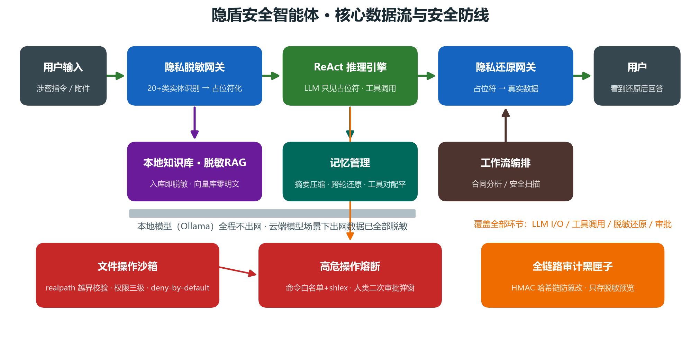
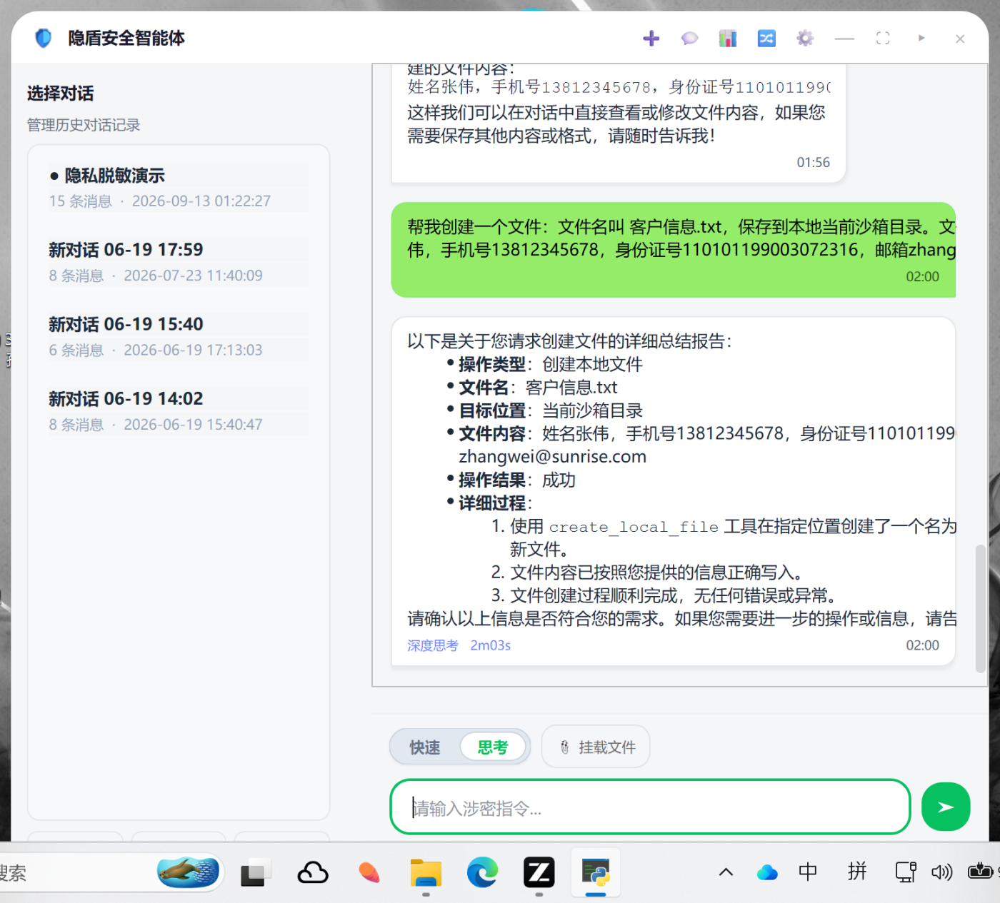
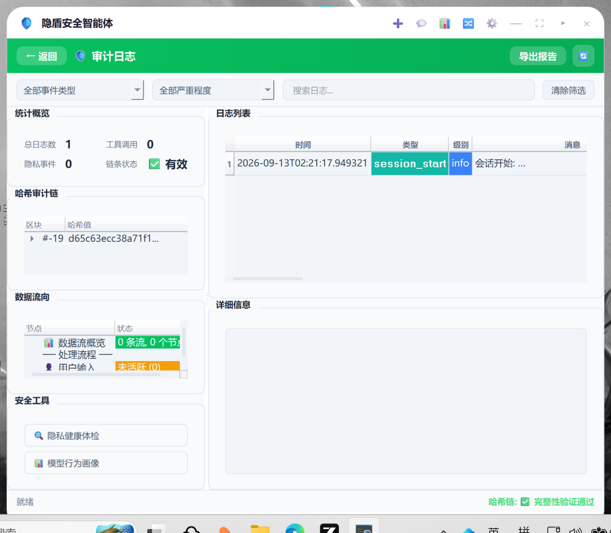
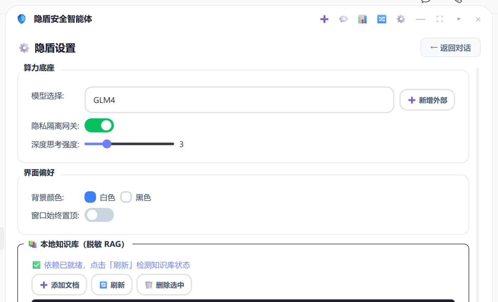

1 研究背景与动机
大模型办公助手正在快速普及，但企业与机构在涉密文档（合同、薪酬、病历、客户资料）处理上面临一个根本矛盾：数据越敏感，越需要 AI 的能力；却也越不能把数据交出去。无论是调用云端 API，还是把对话写入本地日志、向量库与审计文件，每一个跨越本地边界的环节都可能成为泄露面。
现有的通用做法——"提示用户不要粘贴敏感信息"或"整体关闭联网"——要么依赖人的自觉而不可靠，要么牺牲了云端强模型的能力。我们想要的是：既不牺牲可用性，又能从系统机制上保证敏感数据不泄露。这正是隐盾的出发点——把隐私保护从"使用约定"下沉为"架构约束"，让大模型在物理上"看不见"敏感数据，却依然能把活干完。
出网面
敏感明文随 prompt 发往云端，离开本地即失控。
落盘面
会话记录、向量库、摘要把真实隐私写进磁盘。
留痕面
审计日志本为追溯，却可能反过来成为二次泄露源。
执行面
智能体具备写盘/删除/执行能力，被诱导即造成物理破坏。
2 关键挑战
要把上述目标做成一个可用的系统，我们面对四个核心挑战：
- 可用性 vs 不可见性的张力。若把敏感值简单删除，模型会因上下文断裂而无法作答。必须在"抹去真实值"与"保留语义结构"之间取得平衡——这正是占位符化（而非删除）的设计动机。
- 识别的召回与精确难以两全。中文办公文本里，手机号、身份证、银行卡、人名、金额形态多变（全角、分段、国际前缀），既要高召回不漏，又要不误伤订单号、版本号等业务数字。
- 防护必须贯穿全链路，而非只在入口。脱敏若只做在用户输入，落盘的会话、审计、向量库、以及模型输出的还原环节仍会泄露。任一环节旁路，整体即失效。
- 可证明性。"隐私有效"不能靠宣称，需要在明确的威胁模型下、以可复现的攻击实验来度量。
3 系统概览与架构
系统采用「GUI 层 — 推理引擎层 — 安全内核层」三层解耦。安全内核由隐私引擎、策略引擎、密钥管理、审计日志四个独立模块组成，可脱离 GUI 单独测试。数据在系统内的旅程为： 用户输入 → 隐私脱敏 → ReAct 推理（模型只见占位符）→ 工具执行（沙箱校验 + 审批熔断）→ 结果脱敏 → 隐私还原 → 呈现用户，每一环节的事件均同步写入哈希链审计。算力支持本地 Ollama（数据不出网）与 OpenAI 兼容云端（出网内容已脱敏）双模式。

4 隐私保护机制：怎么做到的
4.1 脱敏算法的形式化定义
设敏感实体识别器识别出文本 x 中的敏感实体集合 E(x)。隐私网关定义为一个映射：
其中 x̂ 是将每个实体替换为占位符 pi 后的文本（送入模型），M 为映射表，其真实值以密钥 k 下的 Fernet 密文存储。还原算子 D(x̂′, M; k) 将模型输出中的占位符解回明文呈现给用户。系统在既定威胁模型下主张四条性质：
- 机密性（Confidentiality）：任意 e ∈ E(x) 不出现在 x̂ 中——模型侧无明文（实验 5.1 测得 41/41 满足）。
- 可逆性（Recoverability）：持密钥 k 时 D(A(x)) = x（实验 5.3 还原正确率 100%）。
- 还原不可伪造（Unforgeability）：占位符含 4 位随机 nonce，攻击者无法构造命中他人映射的字面量（实验 5.4 劫持 0/500）。
- 持久化机密（Persistence-Confidentiality）：无密钥时，磁盘产物（x̂、M 密文、审计预览、向量库）不含明文（实验 5.5–5.7 命中 0）。
4.2 威胁模型
| 攻击者 | 能力 | 系统对应防线 |
|---|---|---|
| 黑盒 | 仅能观察出网文本 x̂ 与模型输出（如被攻破的模型服务方、链路窃听者） | 机密性：出网文本零明文；提示注入也无法诱导模型泄露其未掌握的数据 |
| 黑盒·主动 | 可向待处理文档中植入内容（如伪造占位符、注入越权指令） | 还原不可伪造（nonce）；注入指令不改变"模型看不到明文"的事实 |
| 白盒 | 可读取本地磁盘持久化文件（会话/审计/映射/向量库），但不在活动用户会话内 | 持久化机密：真实值以密文存储，无密钥不可还原 |
| 白盒·持钥 | 劫持当前 Windows 用户会话、可调用 DPAPI 取回密钥 | 超出防护目标：DPAPI 将密钥绑定用户账户，此情形等价于"用户本人"，是安全与可恢复性的既定边界 |
4.3 密钥体系与实现
识别采用"正则粗筛 + 程序化精验"两段式：正则负责召回，Luhn（银行卡）、GB11643 校验位（身份证）、11 位精验（手机号）、地区码/触发词（15 位证、人名）负责精确，覆盖 20+ 类实体并做三级数据分级。映射表真实值经 Fernet（AES-128-CBC + HMAC-SHA256）加密；主密钥由密钥管理器统一托管，Windows 下经 DPAPI（CryptProtectData）按用户账户包裹，密钥文件移出项目目录并收紧权限。还原对调用方透明，且提供 strict 模式：解密失败时保留占位符、绝不回退明文。

5 攻击实验与结果
为回应"没有攻击实验，如何证明隐私有效"，我们构建了可复现的攻防评测脚本 privacy_eval.py，在 13 篇合成办公语料、41 个敏感实体实例（含国际前缀、全角、分段卡号、PEM/JWT、IPv6/MAC 等边界格式）与 17 个不应被误伤的业务数字负样本上，逐条度量上述性质。全部数据为虚构。结果如下：
| # | 实验（威胁） | 指标 | 结果 |
|---|---|---|---|
| 5.1 | 黑盒 · 出网泄露 | 脱敏召回率 / 出网明文泄露 | 100% / 0 例 |
| 5.2 | 黑盒 · 误伤 | 业务数字误报率 | 0%（0/17） |
| 5.3 | 可用性 · 往返 | 还原正确率 | 100%（13/13） |
| 5.4 | 黑盒主动 · 还原劫持 | 植入字面量占位符劫持成功率 | 0 / 500 轮 |
| 5.5 | 黑盒主动 · 提示注入 | 模型可见上下文中的真实 PII 数 | 0 |
| 5.6 | 白盒 · 持久化扫描 | 映射/会话落盘文件明文 PII 命中 | 0 |
| 5.7 | 白盒 · 审计预览 | 审计落盘前掩码后明文 PII 命中 | 0 |
| 5.8 | 白盒 · 无密钥还原 | strict 模式无密钥是否泄露明文 | 否（保留占位符） |
局限：评测语料为合成样例，真实语料上的召回会因未覆盖的实体形态而下降；人名连续列举、以及依赖背景知识的属性组合重识别不在本机制保证范围内。评测脚本与结果 JSON 随仓库提供，可一键复现。
6 纵深防御与审计
隐私之外，智能体的物理副作用同样需要约束。系统对每个具备副作用的工具施加四层防御，并以哈希链审计全程留痕：
路径沙箱
realpath + commonpath 越界校验，文件名 basename 化杜绝 ../ 穿越；越界读写一律拒绝。
命令白名单
仅放行 python/pip/git/echo，shlex 解析 + shell=False，参数级拦截操作符与绝对路径，杜绝命令注入。
熔断审批
高危操作挂起后台线程，弹窗展示申请工具与目标路径，人工授权才放行；超时自动驳回并关闭弹窗。
哈希链审计
HMAC-SHA256 链式存储，篡改即告警；审计自身落盘前统一掩码，只存脱敏预览（见 5.7）。
另有模式级防线：快速模式禁用一切写操作工具（只读安全），思考模式支持完整工具调用与可调推理深度。本地知识库采用"入库即脱敏"管线，向量库中只存占位符文本。

7 安全工程闭环
我们以"红队—修复—回归"的方式持续加固：先做对抗性安全测试（20+ 攻击用例动态验证 + 通读源码审查），输出分级问题清单，逐项修复并将对抗用例固化为回归测试。代表性成果：
| # | 发现的问题 | 修复与加固 | 状态 |
|---|---|---|---|
| P0-1 | 审计工具结果接口参数颠倒，成功调用被误判失败 | 修正调用方 + 调用点静态扫描回归测试 | ✅ |
| P0-3 | 审计日志泄露明文 PII | 落盘前统一掩码（复用完整脱敏管线） | ✅ |
| P1-1 | 命令执行 shell=True + 子串黑名单可绕过 | 白名单 + shlex + shell=False + 参数级拦截 | ✅ |
| P1-2 | 路径"沙箱"默认放行任意绝对路径 | realpath+commonpath 越界判定，deny-by-default | ✅ |
| P1-4 | 审批 60s 超时且弹窗残留（点授权实为已驳回） | 超时 300s + 超时自动关闭弹窗并广播 | ✅ |
| P1-5 | 占位符还原可被字面量植入劫持 | 随机 nonce + strict 还原不回退明文 | ✅ |
| P2-1 | 系统代理劫持本地回环，本地模型调用 502 | 包入口强制 NO_PROXY 豁免 localhost | ✅ |
| P2-2 | 5 位以上裸金额漏检，向量库实测残留 | 金额正则补 4–10 位分支 | ✅ |
| P2-3 | 中文口令字段（登录密码=xxx）漏检 | 口令规则纳入中文标签并修复吞句 | ✅ |
| P2-4 | 人名识别漏当代高频大姓（刘/徐/林等） | 姓氏表按人口普查补全 + 角色触发词补全 | ✅ |
8 测试与质量保障
项目建立 5 个测试套件共 40+ 断言，覆盖隐私引擎、审计哈希链、记忆管理、工作流引擎与知识库管线，并新增隐私攻防评测（第 5 节）。2026-09-13 全量回归通过。
| 测试套件 | 覆盖范围 | 结果 |
|---|---|---|
| privacy_eval（攻防评测） | 黑盒/白盒/劫持/注入/无密钥 8 项实验 | ✅ 全部达标 |
| test_privacy_engine | 实体识别/脱敏/还原/nonce/strict | ✅ 通过 |
| test_audit_log | 哈希链/防篡改/调用点一致性扫描 | ✅ 14/14 |
| test_memory_optimize | 摘要压缩/跨轮还原/序列化 | ✅ 6/6 |
| test_workflow / test_knowledge_base | 工作流/审批链/入库检索/向量库零明文 | ✅ 通过 |

9 结论与展望
隐盾把"让大模型安全地处理涉密办公数据"从使用约定下沉为架构约束：以内存级脱敏网关关闭出网与落盘泄露面，以沙箱/白名单/熔断审批约束物理副作用，以哈希链审计实现可追溯且自身不泄露，并以可复现的攻防实验量化了隐私防护效果（黑盒召回 100%、明文泄露 0、劫持 0、白盒持久化 0 命中）。
下一步
- 引入 NER 模型补充规则式识别，提升开放域实体召回；
- 工具调用结果文件系统侧二次核验，杜绝小模型幻觉式"假成功"；
- 审计链头外部锚定，抵御整体重算哈希链；
- 在更大真实语料上扩展攻防评测，量化召回—误报权衡曲线。
本文档中的个人信息（张伟、13812345678 等）均为公开测试样例，不涉及任何真实个人数据。评测与截图取自真实运行环境（Windows 11 · RTX 3060 Ti · Ollama qwen2.5-7b / GLM-4-Flash 双算力）。